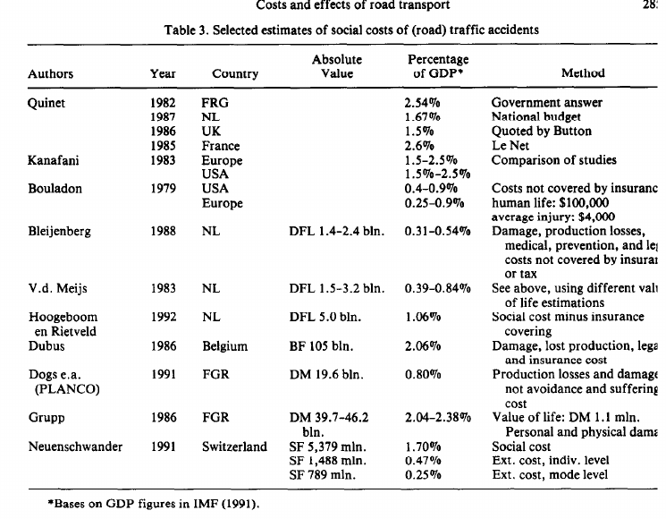
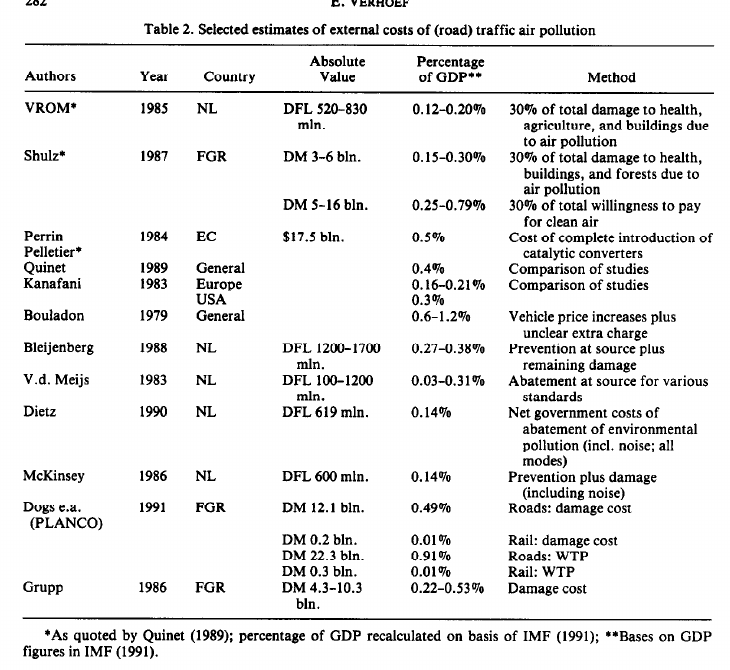

Audit transport cost estimates by welfare component, valuation and aggregation
Useful first: Derive joint activity, abatement and defence conditions in the transport model
Lesson outline
- 02IntroductionSee the main question, learning objectives and prerequisites.
- 03Key definitions and conceptsGet familiar with the important terms and notation.
- 04Transport benefits and external benefits are differentThe article requires a real variable in a receptor's utility/profit function whose value depends on a supplier's behaviour and is omitted from that supplier's decision.
- 05Efficiency and the unpaid bill require different measuresOne question asks for optimal marginal choices or road prices.
- 06Accidents: risk valuation and aggregationAccident costs can include vehicle/property/environmental damage, legal/police/emergency costs, medical/funeral costs, pain and suffering and lost production.
- 07Topic map of the paperExplore topic map of the paper.
- 08Why noise and air-pollution estimates can undercountThe paper evaluates the studies in Tables 1 and 2 as mostly unpaid-bill studies, not estimations of the welfare-maximizing activity.
- 09What the review establishesTransport's value to users and markets does not cancel a technological externality.
- 10Worked exampleFollow a complete application of the reasoning.
- 11Practise the reasoningWork through written tasks, with optional support and solutions.
- 12Check your reasoning: an offline quizCheck your choices and see feedback without a connection.
- 13Check your understandingReview the key distinctions and check what you can explain.
- 14Test yourself laterTry another prepared question before rereading.
- 15SourcesFind the materials and limits behind the lesson.
Introduction
In this lesson, audit transport cost estimates by welfare component, valuation and aggregation.
2.1 What you’ll learn
- Audit a supplied transport estimate for omitted cost components and incompatible valuation/aggregation rather than treating historical tables as current totals.
2.2 Before you begin
Check the foundations
Ifresidual EC10 and defence D3, is gross receptor burden10?
Reveal foundation explanation
No:\(\mathrm{EC}+D=13\) with a matched boundary, because defence consumes resources. Otherwise
Key definitions and concepts
- Unpaid external bill: The specified outside residual harm plus outside defence expenditure.
- Marginal damage: The harm from an additional activity unit at its relevant time/place.
- Stock-to-flow ratio: A ratio carrying time units when a stock is divided by an annual flow.
Transport benefits and external benefits are different
The article requires a real variable in a receptor's utility/profit function whose value depends on a supplier's behaviour and is omitted from that supplier's decision. Ordinary economic dependencies through prices are excluded from this definition.
In the paper's simple Figure 1, external costs push unrestricted activity beyond its efficient level, while external benefits would justify encouragement. A downward private-cost shift can increase consumer surplus while leaving the external-cost wedge intact.
Thus useful transport and technological external benefit are different propositions.
The author finds no significant external benefits of individual road transport activities, apart from a possible car-spotter example. Cheaper production, wider product choice and faster delivery generally enter market transactions;
associated employment and value added do not justify transport above its optimum. Visits to friends can reflect reciprocal exchange or deliberate altruism.
Infrastructure's contribution to accessibility and regional development belongs to the investment appraisal, rather than being credited as an external benefit of each extra trip. Better emergency access also depends on infrastructure;
more traffic may instead obstruct it through congestion. These conclusions are the author's classifications under the stated market framework, including the assumption of no distortions elsewhere when tracing market benefits to final consumers.
They do not say transport has no private or social benefit.
4.1 Classify the harm and its incidence

Figure 2, physical PDF p. 4 (printed p. 276), also reproduced in lecture p. 11. Rows separate intra-sectoral harm among road users from ecological and social environmental harm; columns separate moving traffic, stationary vehicles and infrastructure-associated effects. Shading represents first-order incidence.
Congestion lies largely within the sector; noise affects social surroundings;
air, water and soil pollution reach ecological surroundings; accidents have several incidences, including fellow road users and people outside the sector, and hazardous-material accidents can harm ecosystems.
Parking consumes public space and can create parking congestion. Infrastructure can sever biotopes, create visual annoyance or impose barriers within communities.
The article displays this broad typology but explicitly excludes environmental effects caused by the mere presence of infrastructure from its later analysis. A second-order effect can connect categories: congestion increases emissions per vehicle-kilometre.
Severity is sensitive to time and place.
Efficiency and the unpaid bill require different measures
One question asks for optimal marginal choices or road prices. The other asks what total burden transport shifts to other people.
The second requires \(EC+D\), rather than residual damage alone. Average gross burden indicates an optimal marginal rate only under additional conditions such as constant marginal external cost;
total harm divided by total kilometres generally does not supply a time-and-place-specific optimal price. There is no single aggregate optimal road-transport quantity independent of location and time.
The level of aggregation matters too. Harm imposed by one motorist on another is external to the first motorist but remains inside the motorist sector. Adding that harm to environmental damage can be appropriate for some social-cost questions, but it cannot be labelled without qualification as the sector's unpaid bill to the rest of society. This distinction becomes especially important in accident accounting.
Accidents: risk valuation and aggregation
Accident costs can include vehicle/property/environmental damage, legal/police/emergency costs, medical/funeral costs, pain and suffering and lost production. Responsibility can be shared in a chain collision;
a responsible driver's own injury can impose further losses on relatives and society. Some published studies define social accident costs as total costs less insurance coverage, which differs from the article's earlier total private-plus-external social-cost definition.
Fixed yearly insurance premiums can compensate losses without pricing the marginal kilometre, so compensation does not establish optimized accident risk.
Valuing life solely through expected net production can give negative values for elderly or jobless people. The author instead favours ex ante valuation of changes in physical risk.
Historical estimates differ substantially by concept: the paper cites ECU 12,280 for gross earnings in Portugal, ECU 1,667,246 for social willingness to pay in Switzerland, and an even lower Netherlands friction-cost estimate of DFL 2,400 (about ECU 1,000). These are evidence of incompatible valuation concepts rather than comparable prices of a human being.

Table 3, PDF p. 13, printed p. 285. The original source clips some text at the right margin; the legible numerical columns and method distinctions are retained. These are social accident costs with varied boundaries, not one consistently defined environmental external-cost series.
The Swiss Neuenschwander et al. (1991) rows give SF 5,379 million / 1.70% GDP in social costs, SF 1,488 million / 0.47% GDP in external cost at individual level, and SF 789 million / 0.25% GDP at mode level. The footnote on PDF p. 12 likewise contrasts individual and mode aggregation for car traffic and reports a larger proportional reduction for rail traffic.
Changing the analytical boundary changes what is external. The paper therefore warns against adding these accident totals to noise and air-pollution external costs and calling the result transport's external burden.
Topic map of the paper

The diagram follows sections 2–6 and the qualifications in the original, physical PDF pp. 1–14 (printed pp. 273–286).
Why noise and air-pollution estimates can undercount
The paper evaluates the studies in Tables 1 and 2 as mostly unpaid-bill studies, not estimations of the welfare-maximizing activity. A recurring problem is estimating one component of gross external cost instead of \(EC+D\).
Actual protective expenditure measures part of \(D\) while omitting remaining damage. A valuation of experienced harm measures part of \(EC\) while omitting induced protective expenditure.
Studies using abatement expenditure \(A\) measure a different component again. The paper's exceptions combining prevention and residual damage try to assess an optimal rather than actual situation, and their choice of optimum is unclear.
8.1 Shortcuts and choice of a standard
Using observed protection outlays as the entire loss assumes away the harm that remains after rational protection. Usually victims stop protection while another reduction in nuisance would still have value, because additional spending competes with other consumption.
Using the hypothetical cost of a programme that reduces nuisance to a supposedly reasonable level has three further problems: it omits remaining damage, replaces the value of the damage reduction with the programme cost, and selects the standard before the cost/benefit balance that should determine it. The IRT France estimates vary by a factor of six with the noise standard;
the Dutch Van der Meijs estimates differ by factors of nine for noise and twelve for pollution. These illustrate dependence on an imposed norm, not precision about the underlying welfare loss.
8.2 What valuation techniques measure
Nonbehavioural linkage methods start with a damage or dose-response relationship and multiply physical impacts by market prices: building deterioration, agricultural damage or cost of illness are examples. They do not directly recover the receptor's utility loss and can omit non-use values.
Behavioural linkage methods infer valuation from choices in a surrogate market, such as hedonic house prices, travel costs or household protection, or from a hypothetical market, such as a contingent-valuation willingness-to-pay survey. Surrogate markets may be absent or regulated;
hypothetical responses have methodological uncertainty. The author prefers utility-linked valuation conceptually but does not rank one method as universally best.
Some methods can be complementary if they measure genuinely different components. The example is psychological willingness to pay combined with costs, such as paid sick leave, that may not enter an individual's optimization.
This is a conditional argument for assessing omitted components, not permission to add overlapping valuations blindly. The article notes that both behavioural and nonbehavioural estimates can still capture only net damage.
8.3 Read the historical tables

Table 1, PDF p. 9, printed p. 281. Columns retain authors/year/country, original monetary units, GDP shares and measurement methods. The footnote identifies GDP data from IMF (1991) and estimates quoted through Quinet (1989).
The road-noise row for Dogs et al. (1991), Germany, reports DM 0.84 billion / 0.03% GDP for avoidance cost versus DM 12.8 billion / 0.52% GDP for willingness to pay. This is about fifteen times as large, but the comparison concerns distinct methods rather than two independently comparable estimates of identical complete costs.
The UK Sharp estimate of 11.18% GDP is particularly high because the study did not spread outlays over their useful years; a stock of investment should not be compared unadjusted with annual GDP.

Table 2, PDF p. 10, printed p. 282. The source retains the distinct damage, programme-cost and WTP approaches and warns that some rows include noise or all transport modes.
Dogs et al.'s road-pollution rows report DM 12.1 billion / 0.49% GDP for damage cost and DM 22.3 billion / 0.91% GDP for WTP. Shulz's table contrasts DM 3–6 billion / 0.15–0.30% GDP for damage with DM 5–16 billion / 0.25–0.79% GDP for willingness to pay;
each is attributed to 30% of the corresponding total air-pollution burden/value. Higher survey figures can indicate understatement by other methods or difficulties in contingent valuation.
The article does not establish the larger figure as the true complete loss. Its review of hedonic noise studies reports house-price reductions of 0.15–1.3% per extra decibel, dependent on the zero-annoyance baseline and study setting.
The conclusion challenges frequently cited OECD-country figures of 0.1% GDP for noise and 0.4% for air pollution. It suggests possible multipliers of eight for noise and two or three for air pollution if hypothetical valuations are trusted.
The author also identifies omitted effects, including then-unestimated CO₂ emissions and other Figure 2 categories. These are the 1994 review's criticism and conditional numerical comparisons;
they are not present-day GDP shares, statistical confidence intervals or a new aggregate estimate.
What the review establishes
Transport's value to users and markets does not cancel a technological externality. A consistent assessment must specify the activity, who causes/receives effects, the aggregation boundary, and whether it measures residual damage, protective resources or both.
Efficiency requires a joint marginal analysis; an unpaid-bill calculation needs the correctly bounded total.
The survey's strongest conclusion is the conceptual incompleteness and noncomparability of many historical estimates, with contingent-valuation uncertainty and accident-specific complications retained.
Worked example
Prompt: Hypothetical survey of noise and road use: measured residual harm \(\mathrm{EC}=20\), induced receptor defence \(D=5\), supplier abatement \(A=4\), of \(\mathrm{EC}\) an identified 6 is borne by fellow road users within the sector. Separately a historical row reports protection investment stock 100 against annual GDP 1000.
Derive a consistently bounded outside-sector unpaid bill given all D is borne outside; contrast residual-only, defence-only and abatement-only measures.
Explain why that total / traffic is not automatically optimal marginal tax, how transport benefits/typology differ, and why stock/annual flow and survey valuation methods and overlap make historical tables noncomparable. Include accident risk versus production-value and insurance/aggregation qualifications;
does an old GDP share prove current physical damage?
Steps and interpretation: Outside residual \(\mathrm{EC}=20-6=14\); all D outside gives bill \(\mathrm{EC}_{out}+D=19\).
Residual-only omits defence, defence-only omits remaining harm, and A is supplier real cost, not automatically the victim’s unpaid bill. Whole individual harm \(\mathrm{EC}+D=25\) has another aggregation boundary;
social cost may include \(\mathrm{PC}+A\) as well. Total/traffic is an average;
optimal rate uses marginal time/place harm under defined conditions, not generally the average. Ordinary priced transport benefits/employment do not cancel a technological external wedge;
infrastructure access benefits are investment appraisal, not automatic trip \(\mathrm{MEB}\). Typology separates intra-sector/environment and moving/stationary/infrastructure;
the later paper excludes mere infrastructure presence. The stock-to-annual-GDP ratio is \(\frac{100\ \mathrm{currency\ units}}{1000\ \mathrm{currency\ units/year}}=0.1\ \mathrm{years}\): a stock-to-annual-flow ratio with time units, rather than an annual GDP cost share.
An annual cost comparison requires annualisation (useful-life/assumptions absent). Dose-response×market price may omit utility/nonuse;
surrogate hedonic/travel/defence and hypothetical WTP each have availability/bias/boundaries. Add methods only for genuinely nonoverlapping components;
preset noise-standard programme cost is neither full harm nor an optimal standard. Ex-ante risk-change WTP differs from net earnings-life valuation, which can misrepresent elderly/jobless;
fixed insurance compensation does not necessarily price marginal risk. Accident individual/sector aggregation changes externality classification, so adding all accident totals to noise/pollution can mix boundaries.
Historically dated currencies and GDP shares do not establish present physical damage or current values.
Practise the reasoning
Write your reasoning before revealing an explanation. Begin with support, then apply the ideas to another situation.
11.1 Written exercise 1
Hypothetical survey of air pollution and traffic: measured residual harm \(\mathrm{EC}=30\), induced receptor defence \(D=7\), supplier abatement \(A=5\), of \(\mathrm{EC}\) an identified 8 is borne by fellow road users within the sector.
Solve the following:
- Separately a historical row reports protection investment stock 120 against annual GDP 1500.
- Derive a consistently bounded outside-sector unpaid bill given all D is borne outside;
- contrast residual-only, defence-only and abatement-only measures.
- Explain why that total / traffic is not automatically optimal marginal tax, how transport benefits/typology differ, and why stock/annual flow and survey valuation methods and overlap make historical tables noncomparable.
- Include accident risk versus production-value and insurance/aggregation qualifications;
- does an old GDP share prove current physical damage?
Show a hint
Pause before calculating or choosing an explanation:
- What quantities, actors or outcomes are being compared? Write their roles, units and dates beside them.
- Which condition decides whether the relationship applies? Check the relevant definition before using a formula or classifying the case.
- What would have to remain fixed for your comparison to be meaningful? Work through one link in the reasoning at a time.
- How could you check the direction, boundary case or alternative explanation before stating your conclusion?
A local draft for your own study.
Reveal explanation
Key: Outside residual \(\mathrm{EC}=30-8=22\); all D outside gives bill \(\mathrm{EC}_{out}+D=29\).
Residual-only omits defence, defence-only omits remaining harm, and A is supplier real cost, not automatically the victim’s unpaid bill. Whole individual harm \(\mathrm{EC}+D=37\) has another aggregation boundary;
social cost may include \(\mathrm{PC}+A\) as well. Total/traffic is an average;
optimal rate uses marginal time/place harm under defined conditions, not generally the average. Ordinary priced transport benefits/employment do not cancel a technological external wedge;
infrastructure access benefits are investment appraisal, not automatic trip \(\mathrm{MEB}\). Typology separates intra-sector/environment and moving/stationary/infrastructure;
the later paper excludes mere infrastructure presence. The stock-to-annual-GDP ratio is \(\frac{120\ \mathrm{currency\ units}}{1500\ \mathrm{currency\ units/year}}=0.08\ \mathrm{years}\): a stock-to-annual-flow ratio with time units, rather than an annual GDP cost share.
An annual cost comparison requires annualisation (useful-life/assumptions absent). Dose-response×market price may omit utility/nonuse;
surrogate hedonic/travel/defence and hypothetical WTP each have availability/bias/boundaries. Add methods only for genuinely nonoverlapping components;
preset noise-standard programme cost is neither full harm nor an optimal standard. Ex-ante risk-change WTP differs from net earnings-life valuation, which can misrepresent elderly/jobless;
fixed insurance compensation does not necessarily price marginal risk. Accident individual/sector aggregation changes externality classification, so adding all accident totals to noise/pollution can mix boundaries.
Historically dated currencies and GDP shares do not establish present physical damage or current values.
11.2 Written exercise 2
Hypothetical survey of accident and nuisance costs: measured residual harm \(\mathrm{EC}=40\), induced receptor defence \(D=9\), supplier abatement \(A=6\), of \(\mathrm{EC}\) an identified 10 is borne by fellow road users within the sector.
Solve the following:
- Separately a historical row reports protection investment stock 150 against annual GDP 2000.
- Derive a consistently bounded outside-sector unpaid bill given all D is borne outside;
- contrast residual-only, defence-only and abatement-only measures.
- Explain why that total / traffic is not automatically optimal marginal tax, how transport benefits/typology differ, and why stock/annual flow and survey valuation methods and overlap make historical tables noncomparable.
- Include accident risk versus production-value and insurance/aggregation qualifications;
- does an old GDP share prove current physical damage?
A local draft for your own study.
Reveal explanation
Explanation: Outside residual \(\mathrm{EC}=40-10=30\); all D outside gives bill \(\mathrm{EC}_{out}+D=39\).
Residual-only omits defence, defence-only omits remaining harm, and A is supplier real cost, not automatically the victim’s unpaid bill. Whole individual harm \(\mathrm{EC}+D=49\) has another aggregation boundary;
social cost may include \(\mathrm{PC}+A\) as well. Total/traffic is an average;
optimal rate uses marginal time/place harm under defined conditions, not generally the average. Ordinary priced transport benefits/employment do not cancel a technological external wedge;
infrastructure access benefits are investment appraisal, not automatic trip \(\mathrm{MEB}\). Typology separates intra-sector/environment and moving/stationary/infrastructure;
the later paper excludes mere infrastructure presence. The stock-to-annual-GDP ratio is \(\frac{150\ \mathrm{currency\ units}}{2000\ \mathrm{currency\ units/year}}=0.075\ \mathrm{years}\): a stock-to-annual-flow ratio with time units, rather than an annual GDP cost share.
An annual cost comparison requires annualisation (useful-life/assumptions absent). Dose-response×market price may omit utility/nonuse;
surrogate hedonic/travel/defence and hypothetical WTP each have availability/bias/boundaries. Add methods only for genuinely nonoverlapping components;
preset noise-standard programme cost is neither full harm nor an optimal standard. Ex-ante risk-change WTP differs from net earnings-life valuation, which can misrepresent elderly/jobless;
fixed insurance compensation does not necessarily price marginal risk. Accident individual/sector aggregation changes externality classification, so adding all accident totals to noise/pollution can mix boundaries.
Historically dated currencies and GDP shares do not establish present physical damage or current values. All components are required.
11.3 Written exercise 3
Hypothetical survey of urban roads and defence: measured residual harm \(\mathrm{EC}=50\), induced receptor defence \(D=11\), supplier abatement \(A=7\), of \(\mathrm{EC}\) an identified 12 is borne by fellow road users within the sector.
Solve the following:
- Separately a historical row reports protection investment stock 180 against annual GDP 2400.
- Derive a consistently bounded outside-sector unpaid bill given all D is borne outside;
- contrast residual-only, defence-only and abatement-only measures.
- Explain why that total / traffic is not automatically optimal marginal tax, how transport benefits/typology differ, and why stock/annual flow and survey valuation methods and overlap make historical tables noncomparable.
- Include accident risk versus production-value and insurance/aggregation qualifications;
- does an old GDP share prove current physical damage?
A local draft for your own study.
Reveal explanation
Explanation: Outside residual \(\mathrm{EC}=50-12=38\); all D outside gives bill \(\mathrm{EC}_{out}+D=49\).
Residual-only omits defence, defence-only omits remaining harm, and A is supplier real cost, not automatically the victim’s unpaid bill. Whole individual harm \(\mathrm{EC}+D=61\) has another aggregation boundary;
social cost may include \(\mathrm{PC}+A\) as well. Total/traffic is an average;
optimal rate uses marginal time/place harm under defined conditions, not generally the average. Ordinary priced transport benefits/employment do not cancel a technological external wedge;
infrastructure access benefits are investment appraisal, not automatic trip \(\mathrm{MEB}\). Typology separates intra-sector/environment and moving/stationary/infrastructure;
the later paper excludes mere infrastructure presence. The stock-to-annual-GDP ratio is \(\frac{180\ \mathrm{currency\ units}}{2400\ \mathrm{currency\ units/year}}=0.075\ \mathrm{years}\): a stock-to-annual-flow ratio with time units, rather than an annual GDP cost share.
An annual cost comparison requires annualisation (useful-life/assumptions absent). Dose-response×market price may omit utility/nonuse;
surrogate hedonic/travel/defence and hypothetical WTP each have availability/bias/boundaries. Add methods only for genuinely nonoverlapping components;
preset noise-standard programme cost is neither full harm nor an optimal standard. Ex-ante risk-change WTP differs from net earnings-life valuation, which can misrepresent elderly/jobless;
fixed insurance compensation does not necessarily price marginal risk. Accident individual/sector aggregation changes externality classification, so adding all accident totals to noise/pollution can mix boundaries.
Historically dated currencies and GDP shares do not establish present physical damage or current values. All components are required.
11.4 Another chance to practise
Fresh narrowcheck: study values residual noise10 and another estimates defence4.
Solve the following:
- Is adding 14 always valid?
A local draft for your own study.
Reveal explanation
Onlyif same population/time/boundary and genuinely nonoverlapping components; a valuation already including defence cannot be added again.
Check your reasoning: an offline quiz
Choose one answer per question. Check individual answers or check the whole quiz. Each option includes feedback on the reasoning, and everything works offline.
Reveal explanation
Outside residual \(20-6=14\), plus outside defence 5.
Reveal explanation
An accounting total and a marginal incentive answer different questions.
Reveal explanation
Annualizing the stock would require additional life/timing assumptions.
Check your understanding
When two estimates differ, ask which component and boundary each measures before averaging. Draw EC, D, A as distinct boxes; markwho bears each.
- Audit a supplied transport estimate for omitted cost components and incompatible valuation/aggregation rather than treating historical tables as current totals.
Test yourself later
Return to these questions after a break, before rereading the explanation. Use a question you have not just viewed.
14.1 Review question 1
Hypothetical survey of regional transport burdens: measured residual harm \(\mathrm{EC}=60\), induced receptor defence \(D=13\), supplier abatement \(A=8\), of \(\mathrm{EC}\) an identified 15 is borne by fellow road users within the sector.
Solve the following:
- Separately a historical row reports protection investment stock 200 against annual GDP 3000.
- Derive a consistently bounded outside-sector unpaid bill given all D is borne outside;
- contrast residual-only, defence-only and abatement-only measures.
- Explain why that total / traffic is not automatically optimal marginal tax, how transport benefits/typology differ, and why stock/annual flow and survey valuation methods and overlap make historical tables noncomparable.
- Include accident risk versus production-value and insurance/aggregation qualifications;
- does an old GDP share prove current physical damage?
A local draft for your own study.
Reveal explanation
Explanation: Outside residual \(\mathrm{EC}=60-15=45\); all D outside gives bill \(\mathrm{EC}_{out}+D=58\).
Residual-only omits defence, defence-only omits remaining harm, and A is supplier real cost, not automatically the victim’s unpaid bill. Whole individual harm \(\mathrm{EC}+D=73\) has another aggregation boundary;
social cost may include \(\mathrm{PC}+A\) as well. Total/traffic is an average;
optimal rate uses marginal time/place harm under defined conditions, not generally the average. Ordinary priced transport benefits/employment do not cancel a technological external wedge;
infrastructure access benefits are investment appraisal, not automatic trip \(\mathrm{MEB}\). Typology separates intra-sector/environment and moving/stationary/infrastructure;
the later paper excludes mere infrastructure presence. The stock-to-annual-GDP ratio is \(\frac{200\ \mathrm{currency\ units}}{3000\ \mathrm{currency\ units/year}}=0.0666667\ \mathrm{years}\): a stock-to-annual-flow ratio with time units, rather than an annual GDP cost share.
An annual cost comparison requires annualisation (useful-life/assumptions absent). Dose-response×market price may omit utility/nonuse;
surrogate hedonic/travel/defence and hypothetical WTP each have availability/bias/boundaries. Add methods only for genuinely nonoverlapping components;
preset noise-standard programme cost is neither full harm nor an optimal standard. Ex-ante risk-change WTP differs from net earnings-life valuation, which can misrepresent elderly/jobless;
fixed insurance compensation does not necessarily price marginal risk. Accident individual/sector aggregation changes externality classification, so adding all accident totals to noise/pollution can mix boundaries.
Historically dated currencies and GDP shares do not establish present physical damage or current values. All components are required.
14.2 Review question 2
Hypothetical survey of historical transport valuation: measured residual harm \(\mathrm{EC}=70\), induced receptor defence \(D=15\), supplier abatement \(A=9\), of \(\mathrm{EC}\) an identified 18 is borne by fellow road users within the sector.
Solve the following:
- Separately a historical row reports protection investment stock 240 against annual GDP 4000.
- Derive a consistently bounded outside-sector unpaid bill given all D is borne outside;
- contrast residual-only, defence-only and abatement-only measures.
- Explain why that total / traffic is not automatically optimal marginal tax, how transport benefits/typology differ, and why stock/annual flow and survey valuation methods and overlap make historical tables noncomparable.
- Include accident risk versus production-value and insurance/aggregation qualifications;
- does an old GDP share prove current physical damage?
A local draft for your own study.
Reveal explanation
Explanation: Outside residual \(\mathrm{EC}=70-18=52\); all D outside gives bill \(\mathrm{EC}_{out}+D=67\).
Residual-only omits defence, defence-only omits remaining harm, and A is supplier real cost, not automatically the victim’s unpaid bill. Whole individual harm \(\mathrm{EC}+D=85\) has another aggregation boundary;
social cost may include \(\mathrm{PC}+A\) as well. Total/traffic is an average;
optimal rate uses marginal time/place harm under defined conditions, not generally the average. Ordinary priced transport benefits/employment do not cancel a technological external wedge;
infrastructure access benefits are investment appraisal, not automatic trip \(\mathrm{MEB}\). Typology separates intra-sector/environment and moving/stationary/infrastructure;
the later paper excludes mere infrastructure presence. The stock-to-annual-GDP ratio is \(\frac{240\ \mathrm{currency\ units}}{4000\ \mathrm{currency\ units/year}}=0.06\ \mathrm{years}\): a stock-to-annual-flow ratio with time units, rather than an annual GDP cost share.
An annual cost comparison requires annualisation (useful-life/assumptions absent). Dose-response×market price may omit utility/nonuse;
surrogate hedonic/travel/defence and hypothetical WTP each have availability/bias/boundaries. Add methods only for genuinely nonoverlapping components;
preset noise-standard programme cost is neither full harm nor an optimal standard. Ex-ante risk-change WTP differs from net earnings-life valuation, which can misrepresent elderly/jobless;
fixed insurance compensation does not necessarily price marginal risk. Accident individual/sector aggregation changes externality classification, so adding all accident totals to noise/pollution can mix boundaries.
Historically dated currencies and GDP shares do not establish present physical damage or current values. All components are required.
Sources
Show materials and lesson scope
- Verhoef 1994, physical PDF pp. 2–3
- Verhoef 1994, physical PDF pp. 4–6
- Verhoef 1994, physical PDF p. 4
- Verhoef 1994, physical PDF pp. 4, footnote2
- Verhoef 1994, physical PDF p. 8
- Verhoef 1994, physical PDF pp. 8–9
- Verhoef 1994, physical PDF pp. 12–13, footnote12
- Verhoef 1994, physical PDF pp. 13–14
- Verhoef 1994, physical PDF p. 13
- Verhoef 1994, physical PDF pp. 12 footnote11,13–14
- Verhoef 1994, physical PDF pp. 1–14
- Verhoef 1994, physical PDF pp. 9–10
- Verhoef 1994, physical PDF pp. 10–11, footnotes9–10
- Verhoef 1994, physical PDF pp. 11–12
- Verhoef 1994, physical PDF p. 12
- Verhoef 1994, physical PDF p. 9
- Verhoef 1994, physical PDF pp. 9,11–12
- Verhoef 1994, physical PDF p. 10
- Verhoef 1994, physical PDF pp. 10,12
- Verhoef 1994, physical PDF p. 14
- Verhoef 1994, physical PDF pp. 6–14
Numerical and contextual illustrations are hypothetical unless explicitly described as a reported result. Historical data, model assumptions and unresolved source differences retain their stated limits.
These exercises are for self-study. Viewing a prepared item or solution may make that item unsuitable as a fresh check in a tutor chat. This page does not record an assessed learning result.